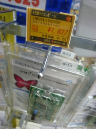
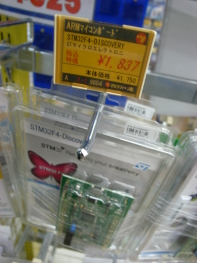
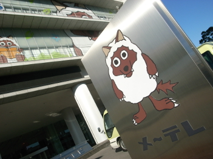
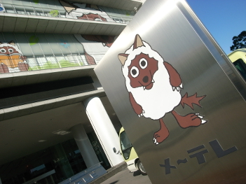

Metasepi作戦会議 第9回 議事録
Table of contents
Metasepi作戦会議 第9回を mbedではじめる関数型マイコンプログラミング講習会β というのをやってみたでゲソ。
みんなは 「モノのインターネット」(IoT：Internet of Things) という言葉を聞いたことがあるでゲソ？ 古くはユビキタス社会と呼ばれていたでゲソが、それの別名が最近付けられたのでゲソ。 バスケットボールのようなこれまでなんの変哲もない物体にもマイコンを搭載して、 データー収集をしたりインテリジェントな応答を返させたりしようというのでゲソ。 「モノのインターネット」製造業への経済効果は2850億ドル――ガートナー なのだそうで、金額はともかくとしても注目されている分野であることには違いないでゲソ。 このIoTのデバイスはコスト重視になるはずなので、LinuxのようなリッチなOSは搭載できないと思うでゲソ。 さらにネットワークに接続することが必須となるためにBluetoothやWifiをしゃべれなければならないはずじゃなイカ。 そのような複雑な機器にもかかわらず出荷後に製品をデバッグすることは困難、つまりランタイムエラーをなんらかの方法で削減しなければならないのでゲソ。 そこで昨年ワシが調べていたように強い型を使った言語を設計に使うことで設計工数を押さえつつランタイムエラーを削減できるはずじゃなイカ。 Ajhcがその解決策になるかどうかは不透明でゲソが、とにかく「関数型言語 + マイコン」という分野のコミュニティを作ることは有益だと思ったのでゲソ。 そのような講習会のコースを作るために、まずは関数型言語ユーザの多い名古屋でβ版を開催しようということになったのでゲソ。 この講習会は続けて開催する予定で、今回はその準備編ということになるんじゃなイカ。
ところで、昨年の検討結果からマイコンプログラミングが可能な静的型付け関数型言語の選択肢はイカのようでゲソ。 今年はそれぞれの言語処理系の評価をして、Arafuraより後のイテレーションに何れを採用するか見当をつけたいでゲソ。
Ajhcはこれまでワシが技術探索してきた成果でゲソ。 ATSはこないだ ユーザーグループを作って 詳細調査中。 またRustは大変開発が活発なので Rust ’n Stuffs をRSS購読しておくと良いと @pirapira 殿におそわったでゲソ。ありがとうでゲソー! それにしてもAjhcをはじめた時はjhcしか処理系の候補がなかったのに、 今は3つも選択肢があるとは嬉しい悲鳴という奴じゃなイカ。
今回の会場は コワーキングスペース「ベースキャンプ名古屋」 さんをお借りしたでゲソ。 スタッフブログにこの講習会が掲載され ているでゲソ。 またこの講習会参加者のコワーキングスペース利用料金を ITプランニング 殿に援助してもらったでゲソ。うれしいじゃなイカー。ありがとうでゲッソ!
発表資料
発表音声
旅の情報 (名古屋)
この講習会は名古屋で続けて開催する予定なので、詳しく旅の情報を記録しておこうと思うでゲソ。
交通
高速バスは安いでゲソ。 夜行バス比較なび 全国の夜行バスの最安値情報 から検索すれば 東京→名古屋 を片道2000円程度で移動できるでゲソ。 ただし、年末年始は相場が高めだったでゲソ…盲点だっだじゃなイカ。
宿
ホテルはいつも じゃらんnet で探しているのでゲソが、どうも名古屋近郊だといつでも カプセルイン名古屋 が最安値のようでゲソ。2500円で一泊できるでゲソ。 ホテル自体は、、、まぁ可も不可もない感じでゲソ。 カプセルの中に電源がないので注意が必要でゲソ。
朝、温泉に入りたい
夜行高速バスで移動すると、どうしてもひとっ風呂あびたくなるでゲソ。 少し駅から遠いでゲソが 太閤天然温泉 湯吉郎 は土日祝日にかぎって朝6時から開いているので、おすすめでゲソー。 タオルが有料なので持参すべきでゲソ。
スタバでもくもく
栄駅近辺には多くのスタバがひしめいている でゲソ。たいだい電源があり、夜22:30ぐらいまで開いているようでゲソ。 作業場所に困ることはなさそうでゲソ。
マルツパーツ
マルツパーツ館 名古屋小田井店 は名古屋にある唯一のパーツショップのようでゲソ。 1 1Fにマイコンボードが置いてあり STM32F4DISCOVERY と STM32VLDISCOVERY が置いてあったでゲソ。やはりワシが最初にターゲットにした STM32F3DISCOVERY はマイナーなボードだったようでゲソ。。。
会議の雰囲気

 
  

@ytsuboiからツッコミ で 「大須あたりにはもっとたくさんあります」 だそうでゲソ!↩
blog comments powered by